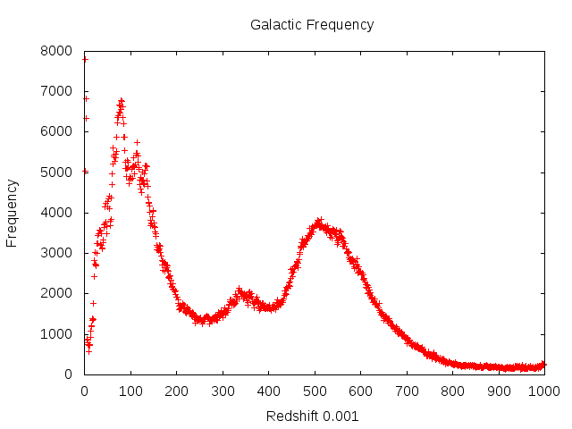

kumarAYUSH
kumarAYUSH
kumarAYUSH
kumarAYUSH
In one of MnP group discussions at IITB, Atul Kedia introduced one of his computational projects; determining the scale at which homogenity and isotropy of the universe is valid based on SDSS DR10. The calculations were based on some concet related to fractal beyond my mathematical skillset. Though, the disucssion insired me to do a smaller version of it during the weekend with Sandesh Kalantre. We could very roughly calculate the densities of galaxies in at different redshifts lying in a spherical shell. That would give us a crude idea of homogenity scale and then we figured to move onto isotroy later.
We collected DR10 redshift data using following CASJOBS query:
SELECT SpecObjID,ra,dec,z,zErr,zWarning,class FROM DR10.SpecObj INTO mydb.MyTable WHERE z BETWEEN 0.001 AND 1.0
This was filtered for GALAXY. We kept our range within $z = 1$, with the best reason being that our classical corresondence of CDM model fails. We use the following python code to get frequency of galaxies in redshift bins of width $0.001$, thus amounting to $1000$ bins:
import numpy as np
import collections
data = np.loadtxt("data.csv",delimiter=",",skiprows=1,usecols=(1,2,3,4))
bins = collections.defaultdict(lambda:1)
for i in data:
s = int(i[2]*1000)
bins[str(s)] += 1
f = open("out.csv","w")
for i in bins.keys():
f.write(str(i))
f.write(",")
f.write(str(float(bins[i])))
f.write("\n")
f.close()
The plot looks like this:
The distinctive peak at about $z=0.01$ is what is known to be Sloan Great Wall, and the observation is expected. What remains unexlained is the peak at about $z=0.55$. One argument was the need to scale the freuqnecy by a factor of square of redshift as we have lesser data for larger redshifts due to observational constraints, but was nullified as there is also a reduction by a factor of square due to a larger number of galaxies at greater redshifts. This comes from our assumtion of homogenity fundamental to the whole discussion.
The problem is open for discussion.